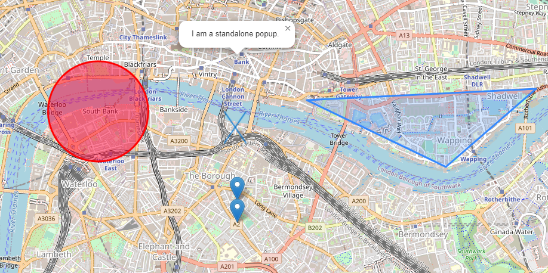

리플릿 기본 기능
레이어, 마커, 팝업, 폴리건 띄우기

leaflet.js
WCS - geoTIFF
TIF 파일로 이미지 레이어 올리기
leaflet-geotiff.js
WCS - netCDF
netCDF 파일로 이미지 레이어 올리기
leaflet-idw.js
WMS
기상청 geoserver에서 layer 가져오기
leaflet.js - L.tileLayer.wms
MBTiles
데이터베이스에 저장된 타일 지도 데이터로 layer 가져오기
Leaflet.TileLayer
MBTiles.js
이미지 띄우기 & 검색
이미지 수정 툴과 지도 텍스트 검색
leaflet.distortableimage.js
Control.Geocoder.js
video
지도 위에 영상 띄우기
leaflet.js
DistortableVideoOverlay
CSV
CSV 파일 데이터로 도형 그리기
leaflet.geocsv-src.js
motion
마커 모션
leaflet.motion.min.js
clustering
마커를 동적으로 표현
leaflet.markercluster-src.js
draw
도형, 마커 추가/삭제
Leaflet.draw.js
tif file load
파일을 로드하여 지도에 레이어 띄우기
georaster.browser.bundle.min.js
print&capture
지도 그림, 정보 프린트 및 캡처
leaflet.browser.print.js
location share
url을 생성하여 위치 공유
Leaflet.LocationShare.js
Measure control
거리 측정
leaflet.measurecontrol.js
storyMap
스크롤에 해당하는 지역 마커로 이동
storymap.js